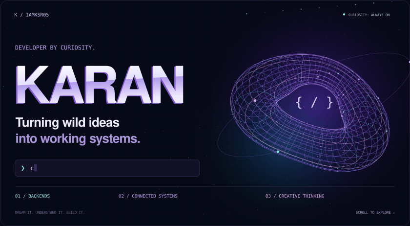
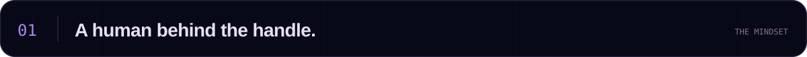
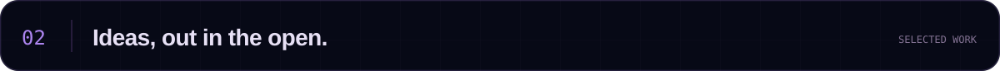
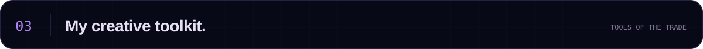

Hey, I'm Karan. I follow the interesting questions. What happens after you click that button? How does the data get there? What makes all these systems work together?
That curiosity takes me through APIs, backend logic, databases, and system integration — with a creative eye for the experience on the other side. I'm also exploring AI & machine learning, one experiment at a time.
I build to understand. I break things to learn. I keep going to make them better.

A few stops on my building journey. Click a card to explore the code.

Tools I use, ideas I'm exploring, and the creative side that comes with me.
| Area | Technologies & tools |
|---|---|
| Code | Python · JavaScript · C · HTML · CSS |
| Backend | Node.js · API flows · System integration |
| Data | MySQL · MongoDB |
| Workflow | Git · GitHub · VS Code · Postman |
| Exploring | Express.js · React · Tailwind CSS · AI/ML fundamentals |
| Creative | After Effects · Premiere Pro · Figma |
Currently exploring: backend depth, better interfaces, and AI/ML foundations.
Creative side quests: motion, video editing, and making digital things feel intuitive.
A little motion from my contribution history 🐍

Generated from my GitHub contributions by the workflow in this repository.

Dream. Learn. Innovate. / @iamksr05